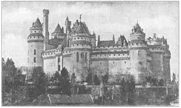

72
CASTLES
城堡

ONCE upon a time there lived a very wicked ogre. He lived in a strong castle set on the top of a hill, and whenever any traveler was unlucky enough to pass along the road below the castle, down would come the ogre and carry the traveler off to his donjon tower.
That sounds like the beginning of a fairy story and that is just what it is. But there is more truth than you might think in a fairy story. In the Middle Ages, when people believed in fairies and ogres, there were many real castles—most of them built on the top of a hill. And although there were no real ogres, there were, I’m sorry to say, bad men living in some of these castles who would really lock up in their donjon towers any one from whom they thought they could get money. Of course not all the knights who lived in the castles were bad. But most of them were warlike and fierce and all the old castles had dungeon cells for prisoners.
These castles were built because of the Feudal System. The Feudal System worked like this. The king or prince who conquered a country would divide the country up among several of his lords. These lords would then divide their parts of the land up among other lords, and these would divide their share again among the knights. Each lord and knight had to promise that he would help the lord from whom he got his land whenever the lord needed him. Then each lord and knight built himself a strong castle to protect his part of the land from any one who might try to take it away from him. There were no policemen in those days to keep one man from trying to steal another man’s land, and so each knight had to have his own soldiers and his own castle to protect his rights.
Near each castle was a village where the common people who were not lords or nobles lived. These people were not very well cared for. They lived in miserable little huts. Most of them had to give part of all the food they raised to the lord of the castle, and all the men had to serve the lord as soldiers whenever he needed them. In return, the lord of the castle protected the poor people from enemies.
The castle was built with great, thick stone walls all around it. Outside of the wall was a deep ditch of water called a moat. The only way to get into the castle was across a drawbridge over the moat. The drawbridge could be drawn up from inside the castle so that an enemy could not enter. If the enemy reached the drawbridge before it was drawn up, he found his way blocked by a huge latticework gate, called a portcullis, which was dropped across the gateway of the castle.
The castle had huge stone towers at the gateway and along the wall, with very narrow slits for windows. Archers could shoot arrows out of these slits, but the slits were hard to shoot through from the outside.
Inside the walls there was a courtyard around which were the stables, soldiers’ and servants’ quarters, kitchens, and a high tower called the keep. In the keep the lord of the castle lived. There was a large dining hall and often a little church or chapel in the keep. And down below the ground level were the prison cells and torture chambers. In case of an attack, all the people of the village came into the castle, often with their cattle and flocks, and stayed there, so there had to be great stores of food on hand.

No.72-2 THE CASTLE OF PIERREFONDS IN FRANCE（法国皮埃尔城堡）
Here is a picture of the Castle of Pierrefonds in France. Notice how few windows there are in the lower walls. Pierrefonds gradually fell to pieces until it was restored about fifty years ago.
【中文阅读】
很久以前有一个非常邪恶的吃人妖魔。它住在一座小山顶上坚固的城堡里。每当有哪位不幸的路人从城堡下经过，吃人妖魔就会冲下来，把人抓进城堡的主塔里。
这听起来像是童话故事的开场白。的确如此。但这比你以为的童话故事要真实得多。中世纪的人很相信仙女和吃人妖魔，那时也的确有很多城堡——大部分都建造在山顶上。尽管吃人妖魔不是真的存在，但我还是很难过地告诉你们，在某些城堡里确实住着坏人，他们真的把任何一个他们认为可以抢到钱的人抓进城堡关押在主塔里。当然，也不是所有住在城堡里的骑士都是坏人。但大部分骑士都是好斗和凶悍的，而且所有的古老城堡里都有关押犯人的地牢。
这些城堡都是为了封建制度而建造的。封建制度的实行如下：当国王或王子征服了一个国家后，他们就会把它瓜分给他们的贵族。这些贵族又会把所得的土地分给其他的贵族，一直分到骑士为止。每个贵族和骑士都必须承诺在任何时候都效忠分给他们土地的主人。然后每个骑士和贵族都会建一座城堡来守护属于自己的领地，防止其他人把它夺走。那时并没有警察来防止抢夺土地这类事，所以每个骑士都必须拥有自己的士兵和城堡，捍卫自己的权利。
城堡的附近是一个村庄，那些非贵族，非骑士的平民百姓住在村子里。他们住着破旧的小茅屋，过着无人关怀的简陋生活。他们中大多数人还不得不将收获的粮食上交一部分给城堡里的贵族。一旦贵族需要，所有的男人都必须为他当兵。反过来作为报答，城堡的主人也会保护这些穷人免遭敌人的侵犯。
城堡的外围是高大厚实的石墙。墙外有个深水沟，叫做“护城河”。进入城堡的唯一方式就是通过护城河上的吊桥。吊桥从城堡里拉起，阻止敌人通过。如果吊桥没来得及升起，敌人就上了桥的话，还有一扇大栅门挡着他们。大栅门叫做“吊闸”，是从城门口放下挡在门前的。
城堡的城门处以及沿着城墙有许多高大的石塔，塔上的窗户却只是非常窄的开口，以供射手向外射箭，但外面的箭却很难射进开口。
城墙内有个庭院，庭院周围是马厩和士兵、仆人的营房、厨房以及一个名叫“主楼”的高塔。城堡的主人就住在这高塔里，里面有一个大餐厅，通常还配备一个小教堂或礼拜堂。城堡底下是牢房和酷刑室。当敌人来侵时，村民都会带上牛羊进入城堡，在里面避难，因此城堡必须储备足够的粮食。
图72-2是“法国皮埃尔逢城堡”。请留意，城墙低矮，上面几乎没开什么窗户。皮埃尔逢城堡早已渐渐地倾塌了，大约在五十年前才重建起来。